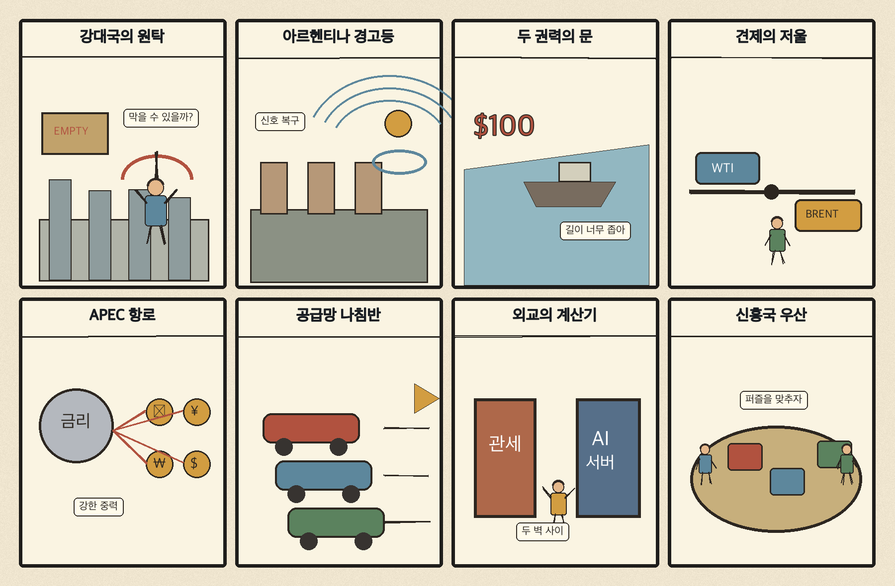
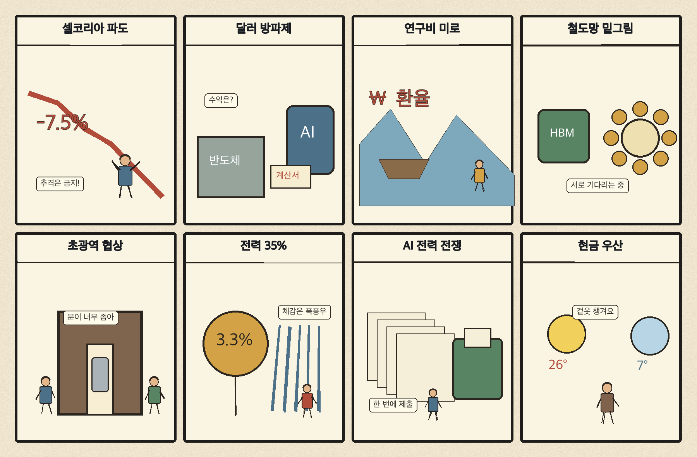

01
로켓랩 · 48.28→53.07달러 · +9.92%
내용요약 시가 대비 +9.92%로 조사군 최상위권 상승을 기록했습니다.
예상여파 급등 뒤 변동성이 커질 수 있어 다음 거래일 거래량과 갭 유지 여부가 중요합니다.
MORNING_BRIEFING_20261109
작성 시각: 2026-11-09 06:34 KST · 직전 미국 정규장과 2026-11-09 KST 당일 공개 기사 기준
11월 6일 뉴욕증시는 다우 -0.46%, S&P 500 +0.31%, 나스닥 +1.09%로 혼조 속 기술주 중심 반등을 보였습니다. 그러나 브로드컴 -5.61%, 엔비디아 -2.33% 등 반도체 내부의 차별화가 컸습니다. 한국 시장은 11월 6일 KOSPI -6.02%, KOSDAQ -5.03%로 다시 급락해 월요일에는 미국 반등보다 국내 수급 안정과 저점 유지 여부가 더 중요합니다.
| 지수 | 종가 | 등락률 | 한국 증시 시사점 |
|---|---|---|---|
| 다우존스 | 51,285.73 | -0.46% | 경기민감주 위험선호 위축 |
| S&P 500 | 7,376.86 | +0.31% | 성장주 변동성 확대 |
| 나스닥 종합 | 24,579.43 | +1.09% | 성장주 변동성 확대 |
직전 미국장은 기술주 중심 반등이었지만 종목별 차별화가 컸습니다.
금요일 5,059.69로 밀려 오늘 수급 안정 여부가 최우선입니다.
반도체 성능을 넘어 발전·전력망 계약이 데이터센터 경쟁의 축이 됐습니다.
주말 뉴스와 외국인 수급이 한꺼번에 반영돼 장 초반 변동성이 클 수 있습니다.
11월 8일 보고서는 수급·컨센서스·30건 이상 유사 조건 표본을 모두 확보하지 못해 공식 추천을 내지 않았습니다. 사후에 종목을 추가하지 않습니다.
| 시장 | 종가 | 등락률 | 기준 |
|---|---|---|---|
| KOSPI | 5,059.69 | -6.02% | 11월 6일 · 시가 대비 -3.87% |
| KOSDAQ | 644.27 | -5.03% | 11월 6일 · 시가 대비 -1.55% |
| 다우존스 | 51,285.73 | -0.46% | 미국 11월 6일 정규장 |
| S&P 500 | 7,376.86 | +0.31% | 미국 11월 6일 정규장 |
| 나스닥 종합 | 24,579.43 | +1.09% | 미국 11월 6일 정규장 |
로켓랩 +9.92%, 앱러빈 +9.91%로 조사군 최상위였습니다.
쇼피파이 +3.81%, 퀄컴 +2.56%로 상승했습니다.
크라우드스트라이크 -5.98%, 브로드컴 -5.61%였습니다.
어플라이드머티리얼즈 -3.88%, 마벨 -2.67%로 밀렸습니다.
내용요약 시가 대비 +9.92%로 조사군 최상위권 상승을 기록했습니다.
예상여파 급등 뒤 변동성이 커질 수 있어 다음 거래일 거래량과 갭 유지 여부가 중요합니다.
내용요약 시가 대비 +9.91%로 강하게 반등했습니다.
예상여파 광고기술 성장주의 위험선호 회복 신호지만 단기 추격매수 부담도 커졌습니다.
내용요약 시가 대비 -5.98%로 조사군 최하위였습니다.
예상여파 사이버보안주 내 차익실현과 성장주 선별 매매가 이어질 수 있습니다.
내용요약 시가 대비 -5.61%로 하락했습니다.
예상여파 나스닥 반등에도 AI 인프라 종목의 고평가 부담과 차별화가 남았습니다.
내용요약 시가 대비 -3.88%로 약세를 보였습니다.
예상여파 반도체 장비 투자 기대가 데이터센터 정책 불확실성에 민감하게 반응했습니다.
나스닥 +1.09% 반등은 월요일 국내 성장주의 낙폭 회복에 우호적이지만, 엔비디아·브로드컴·마이크론은 약세여서 반도체 전반의 추세 반전을 뜻하지는 않습니다. KOSPI가 금요일 시가 대비 -3.87%, 전일 종가 대비 -6.02% 밀린 만큼 반대매매와 환율, 외국인 현·선물 수급이 우선 변수입니다. 장 초반 갭 반등은 추격하지 않고 저점 유지와 거래대금 정상화를 확인하는 대응이 필요합니다.
오늘은 추천 없음 — 현금 관망
KOSPI가 직전 이틀 연속 5% 넘게 하락한 고변동성 국면입니다. 전일까지의 외국인·기관 수급, 컨센서스 변화와 30건 이상 유사 조건 표본을 함께 확보해 종합점수 75점·상승확률 60%·예상 손익비 1.5를 모두 검증한 종목이 없습니다.
관심 연결종목 전력망·메모리·금융보안은 관찰 대상일 뿐 매수 추천이 아닙니다. 장 초반 갭 반등 종목은 추격매수를 금지합니다.
금요일 급락 뒤 현·선물 매도 강도가 줄어드는지 우선 확인합니다.
미국 반도체 혼조가 국내 HBM주에 어떻게 반영되는지 봅니다.
원화 약세와 반대매매성 매물이 장중 낙폭을 키우는지 점검합니다.
이번 주 미국 물가 지표 전망이 금리와 성장주 할인율을 흔드는지 살핍니다.
핵심 요약: AI 경쟁의 병목이 반도체에서 발전·전력망으로 넓어졌고, 대형 데이터센터 한 곳의 투자 결정이 메모리 수요를 크게 흔드는 구조가 부각됐습니다. HBM 증산에 따른 범용 D램 품귀, 로봇 주도권과 금융권 AI 가드레일도 함께 살펴야 합니다.
내용요약 AI 패권 경쟁이 반도체 성능을 넘어 전력 조달 경쟁으로 번졌고, 앤트로픽의 대규모 발전설비 계약이 그 흐름을 보여준다는 보도입니다.
예상여파 데이터센터 전력 확보가 가속되면 발전·전력망·냉각 설비 투자가 늘지만 장기 전력계약 비용도 커질 수 있습니다.
내용요약 AI 데이터센터 한 곳의 투자 취소가 막대한 반도체 수요를 흔들 수 있다는 분석입니다.
예상여파 대형 프로젝트의 인허가와 자금조달 변화가 메모리·서버 공급망 실적의 분기별 변동성을 키울 수 있습니다.
내용요약 HBM 중심 생산 전환으로 범용 D램 공급이 빠듯해지고 있다는 보도입니다.
예상여파 메모리 가격에는 우호적일 수 있으나 PC·모바일 제조사의 원가 상승과 재고 조정 위험이 함께 커집니다.
내용요약 중국산 로봇 하드웨어와 한국산 AI 소프트웨어의 결합을 둘러싼 로봇 주도권 경쟁을 다룬 기사입니다.
예상여파 국산 로봇 생태계는 핵심 부품 자립과 현장 데이터 확보 여부에 따라 부가가치 배분이 달라질 수 있습니다.
내용요약 주요 은행이 생성형 AI의 정보 유출을 막기 위해 AI 가드레일 구축을 강화한다는 보도입니다.
예상여파 금융권 AI 도입이 확대될수록 보안·감사·접근통제 솔루션 수요와 규제 준수 비용이 함께 늘어날 수 있습니다.
핵심 요약: 강대국 중심의 국제질서 재편과 미국 중간선거 이후의 정책 변화가 외교·통상 불확실성을 키우고 있습니다. 아르헨티나의 국가위험도 상승은 신흥국 금융 불안을, 선전 APEC은 아시아 공급망 외교의 시험대를 보여줍니다.
내용요약 미·중·러 중심의 질서 재편 가능성을 현대판 얄타회담에 빗대어 아시아 전후 질서의 변화를 짚은 분석입니다.
예상여파 강대국 협상 구도가 바뀌면 한반도 안보와 무역·기술 동맹의 선택 비용이 커질 수 있습니다.
내용요약 아르헨티나의 국가위험도가 대선과 외채 상환 우려를 반영해 1년 만에 최고 수준으로 높아졌다는 보도입니다.
예상여파 국채·통화 변동성이 커지면 신흥국 전반의 위험 프리미엄과 자금 조달 비용에도 압력이 생길 수 있습니다.
내용요약 미국 중간선거 뒤 행정부와 의회를 동시에 상대해야 하는 한국 기업의 정책 대응 부담을 다룬 기사입니다.
예상여파 관세·보조금·데이터센터 규제의 협상 창구가 복잡해지며 대미 투자 일정과 비용 가정이 흔들릴 수 있습니다.
내용요약 미국 민주당이 행정부의 대외 압박을 견제할 가능성과 한국에 미칠 외교·통상 영향을 분석한 보도입니다.
예상여파 동맹·무역 현안의 의회 심사가 강화되면 협상 속도는 느려져도 정책의 예측 가능성이 달라질 수 있습니다.
내용요약 선전 APEC을 앞두고 한국 외교가 공급망·기후·디지털 의제에서 존재감을 높여야 한다는 제언입니다.
예상여파 다자외교 성과는 중국 시장 접근과 공급망 다변화 사이에서 한국 기업의 선택지를 넓힐 수 있습니다.

핵심 요약: 외국인 대규모 매도 속에서도 반도체 수출 달러가 원화의 완충재로 작용했습니다. 연구개발 재정체계, 국가철도망, 초광역특구와 2035년 전력 비중 목표는 중장기 산업·지역 정책의 핵심 변수입니다.
내용요약 외국인이 국내 주식을 대규모로 매도했지만 반도체 수출로 유입된 달러가 원화의 급격한 약세를 일부 막았다는 보도입니다.
예상여파 외국인 매도가 이어질 경우 주가 변동성은 커지며 수출 달러의 환전 속도가 원화 방어력을 좌우할 수 있습니다.
내용요약 정부출연연구기관의 PBS 폐지 과정에서 부처 간 지원 사각지대가 생길 수 있다는 지적입니다.
예상여파 연구비 배분 체계가 정착되지 않으면 장기 기초연구와 인력 운영의 불확실성이 커질 수 있습니다.
내용요약 정부가 2035년까지의 국가철도망 밑그림을 마련하며 국민과 지방정부 의견을 수렴한다는 보도입니다.
예상여파 광역 교통망 우선순위에 따라 지역 개발, 건설 투자와 통근권 재편 기대가 달라질 수 있습니다.
내용요약 초광역특구의 노동·산업 규칙을 둘러싼 사회적 대화가 시작됐지만 연내 합의는 불투명하다는 기사입니다.
예상여파 합의 속도에 따라 지역 투자 인센티브와 고용 규칙의 시행 일정이 달라질 수 있습니다.
내용요약 한국이 2035년 전력 비중 목표를 35%로 높이는 방향을 제시했다는 보도입니다.
예상여파 전력망 확충과 무탄소 전원 투자가 늘어날 수 있지만 요금·입지·인허가 조정이 핵심 과제로 남습니다.
